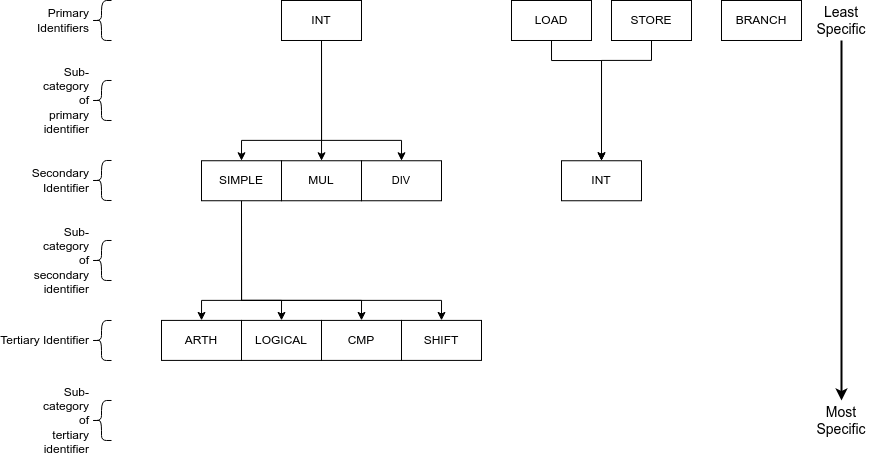

RISCV¶
SimEng provides an almost complete implementation of the rv64ima architecture, as well as being capable of handling some supervisor call (syscall) exceptions via basic system call emulation. This is sufficient to run many simple single threaded programs that have been statically compiled with the standard library.
Contents
Decoding¶
Instruction decoding is performed using the Capstone disassembly framework. The disassembly generated by Capstone is used to determine the properties, operands, and execution behaviour of the corresponding instruction.
The logic held in src/lib/arch/riscv/Instruction_decode.cc is primarily associated with converting the provided Capstone instruction metadata into the appropriate SimEng instruction format. Additionally, an instruction’s identifiers are defined here through operand usage and opcode values. For the RISC-V architecture model, the following identifiers are defined:
isStore_, is a store operation.isLoad_, is a load operation.isBranch_, is a branch operation.isMultiply_, is a multiply operation.isDivide_, is a divide operation.isShift_, is a shift operation.isAtomic_, is an atomic operation.isLogical_, is a logical operation e.g bitwise and.isCompare_, is a compare operation.
Instruction Groups¶
Through a combination of the above identifiers, an instruction can be allocated an instruction group. The instruction groups available to the RISC-V ISA are detailed below:
The above diagram follows the same structure as AArch64 instruction groups. Each level of the diagram represents a different scope of instructions supported, the primary/top-level encapsulates the most instructions whilst the tertiary/bottom-level the least. Each of the above levels is combined through the _ character, working from the top level of the diagram to the bottom. Lower levels are not required if a larger set of instructions is desired. For example the instruction group INT is valid and would encapsulate all instructions that perform integer operations, while INT_MUL is also valid but would only encapsulate the 5 multiply instructions.
This hierarchy-based naming convention has been chosen to provide the user with greater control over the number of instructions grouped under one name, whilst also remaining intuitive. A variety of combinations/instruction scopes can be defined through this method and only uses a small set of easily interpreted operation descriptions.
If the supplied instruction groups don’t provide a small enough scope, a Capstone opcode can be used instead (found in SimEng/build/_deps/capstone-lib-src/arch/RISCV/RISCVGenInstrInfo.inc) with the format ~{CAPSTONE_OPCODE}.
Adding instructions¶
One major advantage of RISC-V over other architectures is the comparatively small number of instructions. For this reason it has been possible to implement all instructions within each supported extension rather than just those that are needed.
As the currently ratified extensions are relatively small it is recommended that a full extension is implemented at once, rather than just the instructions necessary to run a particular code. It is not expected that this will be much more work than implementing just the instructions needed and should prevent more work later in development.
Adding execution behaviour¶
The process for adding a new instruction is very similar to that of AArch64, by adding a new, uniquely identified entry to src/lib/arch/riscv/Instruction_execute.cc.
Zero registers¶
RISC-V provides a zero register RO which is always read as 0. This implementation mirrors that behaviour, and will automatically populate the relevant operands entry with a 0-value RegisterValue.
For instructions that write to the zero registers, the result is discarded. The number of available results entries is reduced accordingly.
Loads and stores¶
In addition to an execution behaviour, memory instructions also require a new entry in the address generation behaviour table found in src/lib/arch/riscv/Instruction_address.cc. These entries are responsible for describing the method used to generate the addresses that these instructions will read from or write to.
Address generation is expected to generate one or more instances of MemoryAddressTarget, containing an address and the number of bytes to access. The same variables as described in the AArch64 documentation (operands, metadata) are available to use to generate these addresses.
Once the addresses have been generated, they should be supplied in a vector to the setMemoryAddresses helper function.
Pseudoinstructions¶
Similar to AArch64 instruction aliases, RISC-V has many pseudoinstructions. These are usually specific instances of a more general instruction. They will have the same opcode but a different mnemonic. Capstone will disassemble these instructions giving a valid opcode but will often miss vital operands that need to be inferred from the instruction mnemonic. This can be quite dangerous as the instruction may pass through the pipeline completely unhindered, but will give an incorrect result. These sorts of errors are very hard to track down.
An example of this would be the pseudoinstruction not rd, rs. This is implemented using the more specific instance xori rd, rs, -1. Capstone will disassemble this giving the opcode for xori as well as the register codes for rd and rs but not the immediate -1.
This must be fixed in the InstructionMetadata constructor. A new entry should be added to the switch statement and the pseudoinstruction mnemonic checked. The correct set of operands can then be set. A couple of helper functions are used for common operand fixes.
To ensure all pseudoinstructions are accounted for, the table in chapter 25 of the RISC-V Unprivileged specification should be checked. It is recommended to implement all pseudoinstructions for all currently implemented instructions.